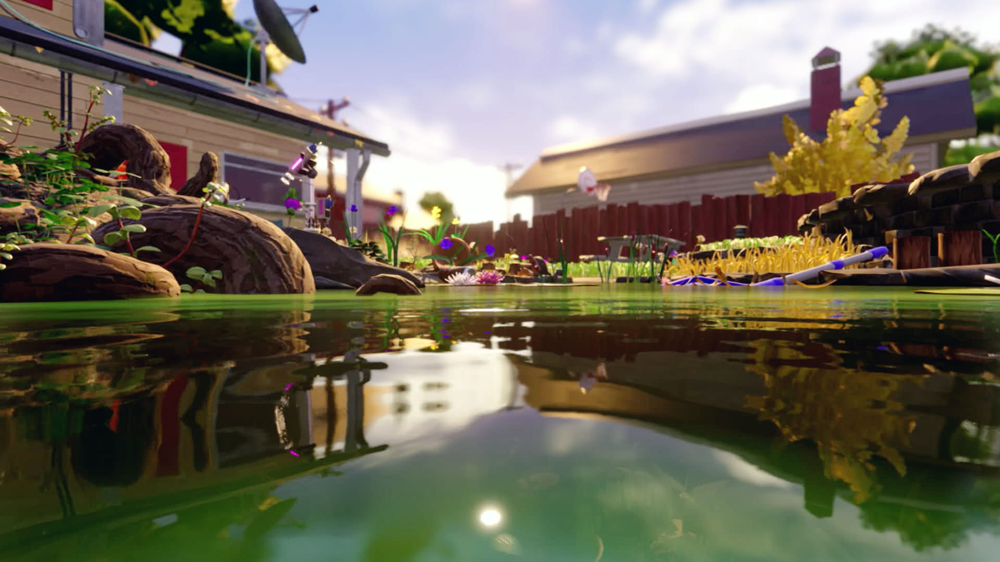
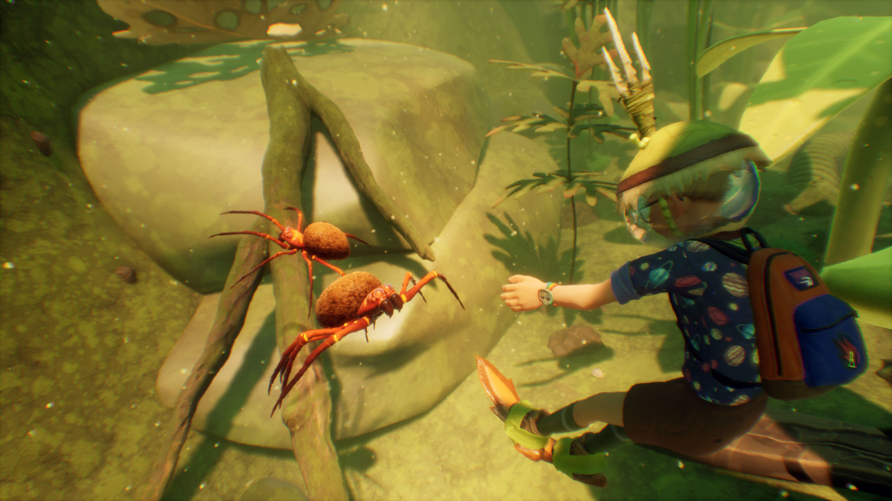
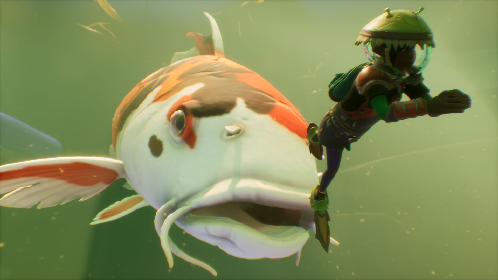

INNOVATIONS

SURVIVE THE POND
Where quiet waters once stood, the pond is now full of life and uncertainty. Weeds reach toward the sunlight amid sunken ruins as unfamiliar creatures emerge from the shade of lily pads, and the water line is periodically breached by the sight of a familiar yet disturbing orange and white fin. The pond is a whole new world rich in resources to discover for crafting new gear and structures useful both below and above water. Use your survival skills to dive deeper and swim faster to explore a diverse submerged landscape and continue to uncover the mysteries of the backyard.

NEW TOOLS FOR SURVIVAL
In order to survive this new environment, you must learn to grow and adapt to these uncharted depths. Gather, research, and craft the tools necessary to increase your chances for survival, or prepare to succumb to the dangers that lie below the surface of the pond.

MEET THE NEW NEIGHBORS
Diving below the quiet surface line of the pond will reveal new neighbors ready to meet you. Whether they are gathering under the shade of the lily pads, enjoying some refreshing algae off of the rocks, or swimming around the waters looking for their next meal, new and exciting friends wait for you below.